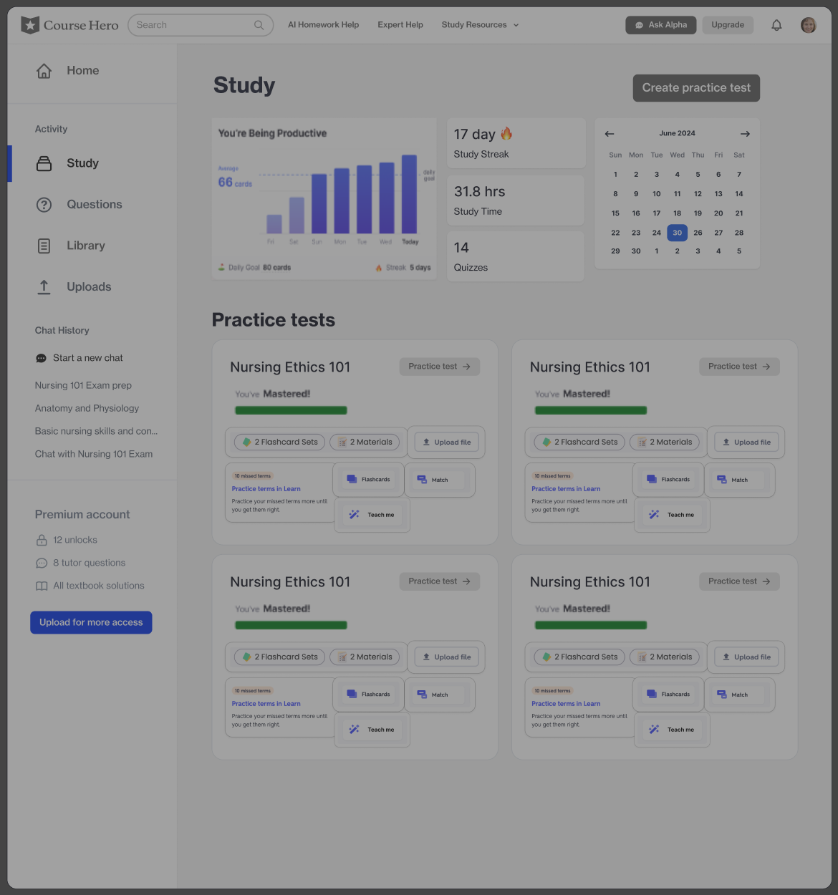
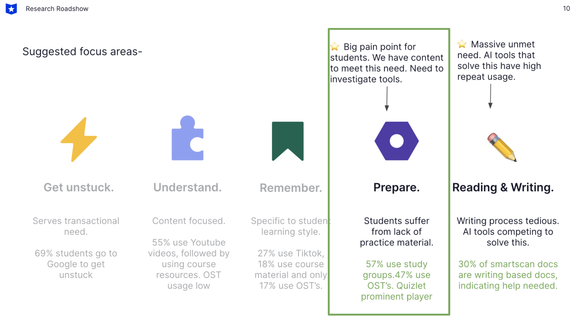
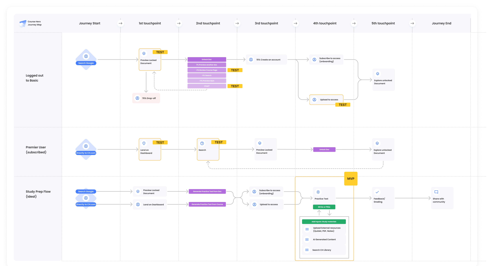
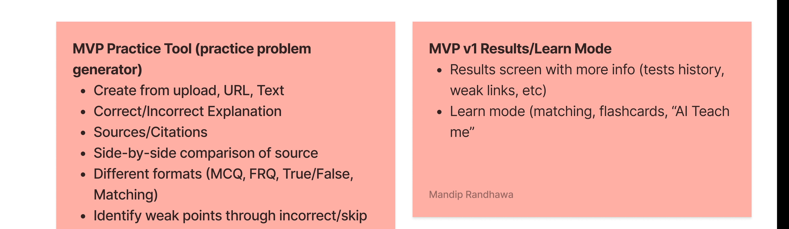
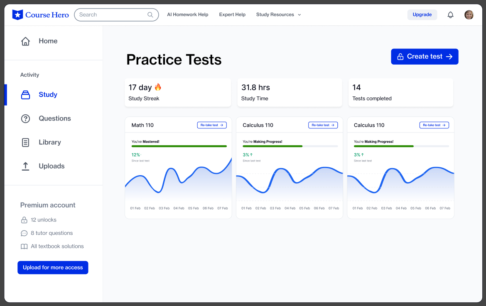
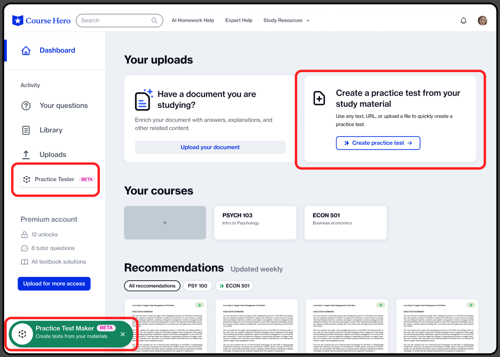

Course Hero was good at answering questions in the moment, but students needed more than a search engine. I designed two generations of AI-native study products: an AI flashcard and practice-test generator, then a semester-long AI study companion that auto-builds itself from a course's existing content. I validated both with KANO surveys and painted-door tests before a line of code was written.

Key Finding
Unaided brand awareness sat at just 4%, against a competitor like Quizlet at 56%.
Course Hero had built its business on being a great answer to a narrow question: a student is stuck on a specific problem, searches, finds a solution, leaves. It worked at scale (1.8 million unique visitors a day), but the relationship was transactional. Students treated Course Hero as a last resort, not a study habit.
Our research team had already mapped the full student study journey before this project started. It surfaced a clear, unmet need: students weren't struggling to find content, they were struggling to prepare, to turn content into confidence before a test. That insight became the starting brief for Study Tools.
A year later, a second round of research surfaced a related but distinct gap: even once a student had tools to prepare, they had nowhere to live across a semester. Course Hero had no concept of "your course" or "your semester"; every visit started from zero. That became the brief for Study Space.

From the research roadshow that kicked off this work: "Prepare" surfaced as a massive unmet need, and Quizlet owned it, not Course Hero.
Study Tools problem: students were already going elsewhere to prepare for exams (study groups, Quizlet, Anki) because Course Hero had no tools for active practice, only documents to read. The fix required AI, which introduced a problem to design around as much as build: trust. Some students didn't trust AI-generated study material at all; others trusted it uncritically.
Study Space problem: even with good tools, Course Hero had no "place" for a student to return to. Every session started cold, and the tools built for Study Tools had no real home in the existing IA either.
Core Tension
AI lowers the barrier to "feeling done" studying, but effortless studying doesn't produce learning, and AI-generated answers that are wrong but confident can cost a student a real grade. The design had to use AI to lower friction without removing the cognitive effort that builds retention, and without ever letting a student over-trust an output that hadn't earned it.
Research Foundation
Two rounds of research, a year apart, reshaped the product direction twice.
Students needed to prepare, and getting unstuck in the moment wasn't enough: it was the biggest unmet need in the market
Study Tools was scoped around practice and active recall: flashcards and practice tests, rather than more answers
Trust in AI output was bimodal rather than uniformly low; some students distrusted it outright, others trusted it blindly
Designed for both ends: visible sourcing and explanations for the skeptical, explicit hallucination disclaimers for the overconfident
Course Hero already had the documents needed to power a semester-long product; it just had no structure to use them
Study Space auto-populates a course from content already on file the moment a student adds their school and course
Neither Study Tools nor Study Space had a natural home in the existing product
Designed new entry points for Study Tools, then overhauled navigation, the dashboard, and the course-add flow for Study Space
Usage and data quality reinforced each other
More students engaging with a course meant more uploaded material, which made every generation more accurate: a flywheel that rewarded discoverability investment
Course Hero's product culture ran on fast, cheap validation before committing engineering time, and this project leaned on that heavily given how much of the surface area was new.
For Study Tools, we ran KANO-model surveys against the candidate feature set (flashcard generation, practice-test generation, AI "teach me" explanations, source comparison) to separate must-haves from delighters from features students were indifferent to. That prioritization is what put the practice-test generator and flashcard generator ahead of other candidates competing for the same engineering quarter.
We paired that with painted-door and smoke tests: real entry points placed in the live product, measuring actual click-through and intent on a feature before a single generation pipeline existed. It validated that "create from your own course material," rather than generic content, was the version worth building, before we wrote a prompt or a line of production code.
We used the same approach for Study Space, painted-door testing the "add your course, get a semester of material" concept against alternative framings before committing to the auto-population model.

The student journey map this work was built on. Yellow "TEST" badges mark every point we validated with a painted-door or smoke test before building.

MVP scoping notes from that map; the "next step" called out is reviewing results from the painted-door tests before locking scope.
An AI flashcard generator and AI practice-test generator built from a student's own course material: upload, URL, or pasted text in, multiple question formats out (multiple choice, free response, true/false, matching). Every result included explanations, source citations, and a side-by-side comparison to the original material.
A "Learn Mode" added matching, flashcard review, and an AI "Teach Me" conversational explainer, with test history to track weak points over time.

A course-level workspace: add your school and course, and Study Space auto-populates from existing assignments, labs, tests, and exams already on file for that course, with no manual upload required.
From that base, it generates a semester-long study guide, flashcards organized by topic and theory, mock tests and exams a student can actually take, and a condensed cram sheet for last-minute review.
Giving Study Space a real home required structural changes beyond the feature itself: a redesigned course-add flow, a dashboard reorganized around a student's active courses rather than past searches, and navigation changes to make the new semester-long surface discoverable rather than buried under search.

I joined as staff designer for the Course Experience pod, designing two generations of AI-native study products end to end: Study Tools and Study Space, including the trust and disclosure patterns for AI output and the navigation, dashboard, and course-add redesign needed to give Study Space a real home. I ran the KANO surveys and painted-door tests that validated both products before a line of code was written, partnering closely with PM, engineering, UX research, data science, and the AI/ML team throughout.
Product Impact
Placeholder metrics; swap in real numbers once available.
Also Drove
Study Tools shipped anchored to each student's own course material, directly addressing the trust gap generic AI study tools hadn't solved
Study Space shipped as Course Hero's first semester-long product surface, generating study guides, flashcards, mock exams, and cram sheets with no added upload friction
The trust and disclosure patterns built for Study Tools became the reference pattern for surfacing AI-generated content elsewhere in the product
The navigation, dashboard, and course-add redesign fed the data flywheel that made every subsequent generation more accurate
Strategic Decisions
AI lowers the activation energy to start studying; the student still does the work. The practice-test generator created questions from an upload, URL, or pasted text, but every result shipped with explanations, source citations, and a side-by-side comparison back to the original material, so a student could verify rather than just accept.
We couldn't assume one mental model for how students would relate to AI-generated content. For the skeptical, we surfaced exactly how an answer was generated. For the overconfident, we built in hallucination messaging rather than letting a clean results screen imply more confidence than the model actually had.
Study Tools shipped before Course Hero had any concept of "your course" or "your semester," so the first job was creating entry points that didn't feel bolted on. Study Space then solved the structural problem, justifying a real navigation and dashboard overhaul.
The most efficient decision in Study Space wasn't a new feature; it was using what Course Hero already had. The moment a student added their school and course, Study Space populated itself from existing assignments, labs, tests, and exams, with zero additional upload effort.
Because generation quality depended on the volume of course material on file, every additional student who engaged with a course made the experience better for the next. We treated discoverability and activation as core to the AI product rather than growth work bolted on afterward.
Letting research lead twice, a year apart, rather than treating Study Tools as the end state. The second research pass is what surfaced the deeper need for a semester-long home; without it, we'd have kept building point tools with no structure underneath them. Validating with KANO and painted-door tests before building also meant the team's appetite for AI investment was grounded in real signal rather than enthusiasm.
We designed the trust messaging for AI outputs reactively, in response to early user concerns, rather than building a single trust framework upfront that could flex across both products. It would have saved rework when Study Space introduced new AI-generated formats that needed the same kind of disclosure but didn't automatically inherit the patterns built for Study Tools.
Designing for AI output is a trust design problem before it's an interface design problem. The hardest decisions weren't about layout; they were about how much confidence an interface should project given a model's actual reliability, and how to design for users who fall on opposite ends of trusting that output too little or too much.
The data flywheel built into Study Space (usage driving uploads driving better generations) became the team's argument for why discoverability and activation work isn't separate from the AI work itself. They compound the same system.
Get in Touch
I'm currently open to new opportunities. If you're looking for a Staff Product Designer who brings clarity to complex problems, let's talk.